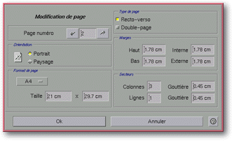

<!-- Documentation Xclamation (c)1994-2000 AXENE contact axene@axene.org>
<html>

<head>
<title>Modification de page</title>
</head>

<body BGCOLOR="#FFFFFF" BACKGROUND="Images/back.gif" TEXT="#000000">

<p ALIGN="right">  </p>

<p><br>
<br>
Cette boîte de dialogue permet de changer individuellement le format de chaque page d'un
document. Cette boîte est semblable à la boîte de dialogue '<a HREF="Box_New_Document.html">Nouveau Document</a>' qu'elle complète en permettant de
modifier les attributs d'une page initialement définis. On ne peut ouvrir cette boîte
qu'à partir du <a HREF="Menu_Context.html#cm_pager">menu contextuel</a> du <a HREF="Pager.html">gestionnaire de pages</a>. La page sélectionnée dans la boîte est
celle sur laquelle a partir de laquelle le menu contextuel à été ouvert. <br>
<br>
</p>

<hr>

<p><br>
</p>

<p align="center"><br>
<small><i>Photo d'écran&nbsp;: Boîte de modification de page </i></small></p>

<p><br>
</p>

<hr>

<p><br>
</p>

<h3>Partie gauche de la boîte de dialogue&nbsp;:</h3>

<ul>
  <li><a NAME="left_arrow_icon">le bouton icône représentant une flèche vers la gauche
    permet de <b>passer à la page précédente</b>. Le numéro et les caractéristiques de
    celle-ci seront alors affichés dans le reste de la boîte. </a><br>
    &nbsp;</li>
  <li><a NAME="page_number_textfield">le champ texte <i>&quot;Page numéro&quot;</i> indique
    le numéro de la page dont les caractéristiques sont affichées. Il permet de <b>choisir
    une autre page à modifier</b>. La valeur doit être comprise entre 1 et le nombre de
    pages (simples) du document. Les doubles pages ont deux numéros de page consécutifs. </a><br>
    &nbsp;</li>
  <li><a NAME="right_arrow_icon">le bouton icône représentant une flèche vers la droite
    permet de <b>passer à la page suivante</b>. Le numéro et les caractéristiques de
    celle-ci seront affichées dans le reste de la boîte. </a><br>
    &nbsp;</li>
  <li><a NAME="orientation_frame">la section <i>&quot;Orientation&quot;</i> a la même
    fonction que celle de la boîte de dialogue '</a><a HREF="Box_New_Document.html#orientation_frame">Nouveau Document</a>', mais n'agit que sur
    la page sélectionnée. <br>
    &nbsp;</li>
  <li><a NAME="page_format_list">la liste déroulante <i>&quot;Format de page&quot;</i> est la
    même que celle de la boîte de dialogue '</a><a HREF="Box_New_Document.html#page_format_list">Nouveau Document</a>', mais n'agit que sur
    la page sélectionnée. <br>
    &nbsp;</li>
  <li><a NAME="size_textfields">les deux champs textes <i>&quot;Taille&quot;</i> sont
    identiques à ceux de la boîte de dialogue '</a><a HREF="Box_New_Document.html#size_textfields">Nouveau Document</a>', mais n'agit que sur la
    page sélectionnée. </li>
</ul>

<p><br>
</p>

<h3>Partie droite de la boîte de dialogue&nbsp;:</h3>

<ul>
  <li><a NAME="recto_verso_button">le bouton poussoir <i>&quot;Recto-verso&quot;</i> est
    activé si la page sélectionnée est une page gauche. Le fait d'activer ce bouton permet
    de passer une page droite en page gauche et a contrario désactiver ce bouton transforme
    une page gauche en page droite. Agir sur ce bouton est sans effet quand le bouton poussoir
    <i>&quot;Double-page&quot;</i> est actif. </a><br>
    &nbsp;</li>
  <li><a NAME="double_page_button">le bouton poussoir <i>&quot;Double-page&quot;</i> est
    activé si la page sélectionnée est une page double. Activer ce bouton transforme la
    page simple sélectionnée en page double&nbsp;; il y a création d'une page. Désactiver
    ce bouton réduit la page double sélectionnée en page simple, il y a destruction de la
    partie droite de la page double. </a><br>
    &nbsp;</li>
  <li><a NAME="margins_frame">la section <i>&quot;Marges&quot;</i> est semblable à celle de
    la boîte de dialogue '</a><a HREF="Box_New_Document.html#margins_frame">Nouveau Document</a>'.
    Les fonctions des quatre champs textes sont identiques à celles de l'autre boîte, mais
    n'agissent que sur la page sélectionnée. <br>
    &nbsp;</li>
  <li><a NAME="sector_frame">la section <i>&quot;Secteurs&quot;</i> est semblable à celle de
    la boîte de dialogue '</a><a HREF="Box_New_Document.html#sector_frame">Nouveau Document</a>'.
    Les fonctions des quatre champs textes sont identiques à celles de l'autre boîte, mais
    n'agissent que sur la page sélectionnée. </li>
</ul>

<p><br>
</p>

<h3>Partie inférieure de la boîte de dialogue&nbsp;:</h3>

<ul>
  <li><a NAME="button_ok"><i>&quot;Ok&quot;</i> <b>accepte les modifications</b> apportées
    aux pages, ferme la boîte et affiche la dernière page sélectionnée de la boîte dans
    le plan d'affichage. </a><br>
    &nbsp;</li>
  <li><a NAME="button_cancel"><i>&quot;Annuler&quot;</i> <b>annule toutes les actions</b> sur
    le format des pages et ferme la boîte. </a></li>
</ul>

<p><br>
</p>

<hr>

<p ALIGN="right"></p>
</body>
</html>
